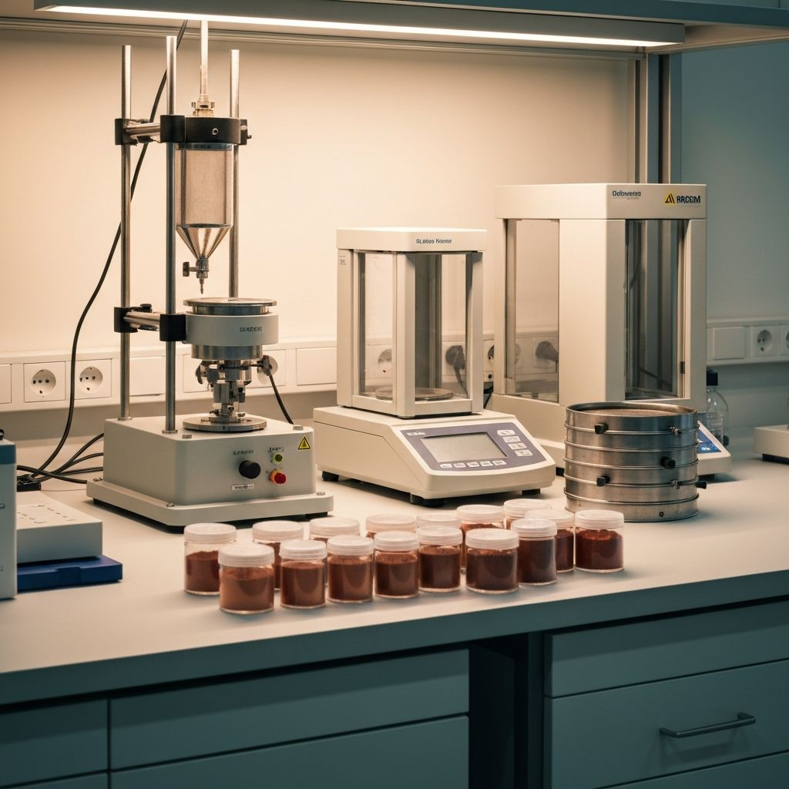

Loading article...
Key Takeaways
Have questions about this topic?
Our technical team can help you select the right grade and provide application-specific guidance.
Our technical team can help you select the right grade and provide application-specific guidance.


